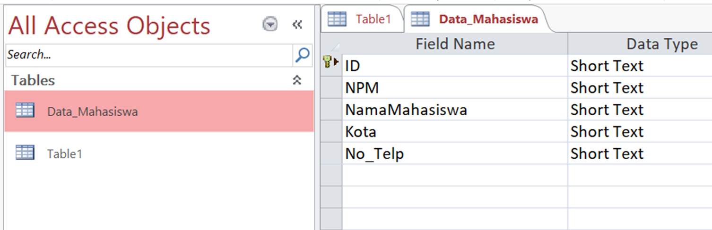

Microsoft Accses
Pembuatan Database Menggunakan Microsoft Access
Microsoft Access
Microsoft Access adalah sebuah program aplikasi basis data computer rasional. Yang ditujukan untuk kalangan rumahan dan Perusahaan kecil hingga menengah.
1.Buka Microsoft Access
1. Buka Microsoft Access.

2.Save File Terlebih Dahulu

3. Pilih Create, Group Tables. Lalu Klik Table Design Isi Field Untuk Tabel Yang Ingin Dibuat, Misalnya Tabel Mahasiswa
4. Klik Data_Mahasiswa pada All Access Objects
5. Pilih Tab Field, Lalu Klik View Dan Pilih ’Datasheet View’ Agar Dapat Mengisi Record Pada Field
6. isikan Record Pada Field Yang Tersedia